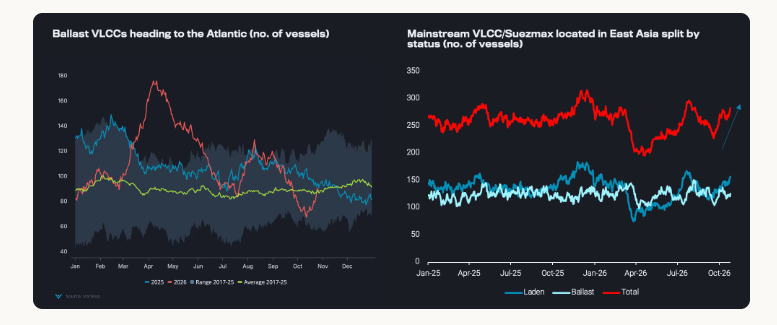
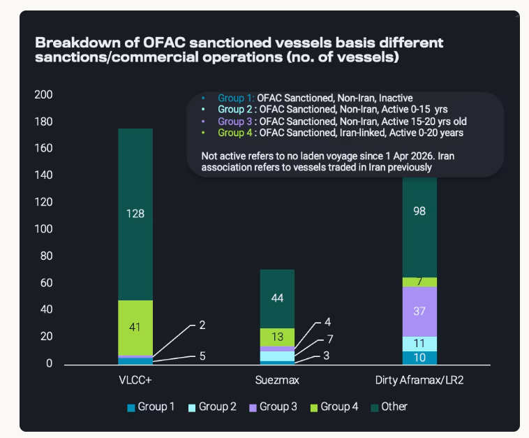
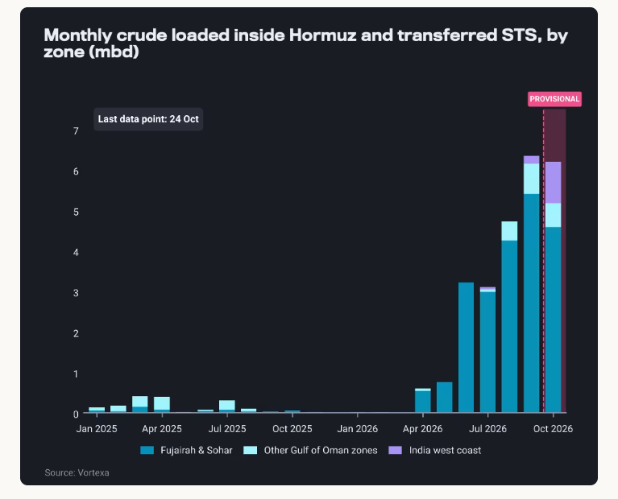

VLCC rates could further ease from record highs, but inefficiencies, attacks and fleet consolidation should keep them above pre-conflict levels.
VLCC rates in the Atlantic Basin have fallen sharply from record highs. Expected tonnage to discharge is rising, weaker Asian demand for Atlantic barrels and possible sanctions relief, all point to further short-term softening. Persistent Middle East inefficiencies, ongoing attacks and a more consolidated fleet mean rates are unlikely to fall back to pre-conflict levels.
VLCC rates from the US Gulf and West Africa have fallen from historical peaks by 27% and 32% respectively over the past two weeks, with smaller tankers following. Is this a short-term correction, or the start of a deeper decline? And if rates fall further, would they reach pre-war levels?
To answer that, we need to look at the five main drivers of this year’s rally:
Middle East Gulf (MEG) ship-to-ship (STS) shuttle relay delays, which tie up tonnage and tighten the Atlantic Basin
War risk premia
The shift of trade flows from sanctioned to mainstream markets
Market consolidation
Higher bunker costs
Bunker costs have doubled this year relatively in tandem with oil prices. That has naturally raised the floor for tanker rates, but it does not fully explain a tenfold rise in freight. This article therefore focuses on the first four factors.
The recent drop in Atlantic Basin rates is triggered from charterers stepping back from the market. Atlantic crude discounts are at record levels, but high freight still makes trades to Asia uneconomic.
In October, the freight premium for moving Atlantic-origin crude to Asia on VLCCs, compared with cargoes from the East of Hormuz, is at least five times what it was in 2025. Atlantic VLCCs have also lost pricing power against Atlantic Suezmaxes. Moving an Atlantic cargo east on a VLCC rather than a Suezmax now costs about $8/bl more on average, against around $1.50/bl a year ago. These weaker netbacks for Asian refiners have softened the VLCC enquiries in the Atlantic (read morehere).
Additionally, with VLCC fixing activity muted over the past 10 days, the tonnage list is lengthening, with the number ofVLCC ballasters heading to the Atlantic Basin up by 30%over the same period. That is however still 20% below 2025 levels.
VLCC availability could also increase further. As VLCC demand shifts towards the Middle East and away from the Atlantic, future tonne-miles to Asia are likely to shorten. Over the next month, vessels now carrying barrels to Asia will discharge and become available again.Crude arrivals into Asia on VLCCs and Suezmaxesare projected at 23.3 mbd this week and over the next two weeks, about 1.5 mbd above the 2025 average. Laden mainstreamVLCCs and Suezmaxes currently located in East Asia are up 15%since the start of September.

The prospective stronger-than-average discharges have a two-fold effect. They release more tonnage into the market, and they ease short-term destocking concerns in Asia. Both bearish factors for freight in the near future.
As discussedin previous articles, the shift of crude flows away from sanctioned origins, mainly Iran, towards the international market has been a key driver of freight. This holds only while vessels engaged in sanctioned trades remain barred from mainstream employment. That barrier may soon ease. The US is considering a waiver that would allow tankers sanctioned for links to Russia, Iran or Venezuela to carry non-sanctioned oil, or to be sold to mainstream owners. In theory, this could release meaningful tonnage. In practice, the impact is likely to be limited.
All but five OFAC-sanctioned VLCCs are either already active or directly tied to Iran, which makes it uncertain whether these tankers would apply for a waiver. Among actively trading VLCCs, only two are aged 15–20 years and have no Iranian links.
A 20-year age limit has long been a standard threshold in the vetting and chartering policies of oil majors and national producers. Vessels that have spent years without access to reputable repair yards or classification society oversight are likely to face even stricter scrutiny, depending on their intended employment. As a result, these tankers are more likely to be deployed in shuttle trades around Hormuz or on MEG–Asia routes, freeing up mainstream tonnage to reposition towards the Atlantic Basin. The same is true for smaller tankers. Only 2 Suezmaxes and 2 Aframaxes, that traditionally serve European demand on Atlantic routes, are not sanctioned by the EU or UK and also have no Iranian ties and are not actively employed.
Based on the illustration below, the most likely candidates for a return to mainstream trade are relatively young vessels without Iranian links: 7 VLCCs, 14 Suezmaxes and 58 Aframax/LR2s. In an edge case where Iran-linked young tankers also apply for and receive waivers, this rises to 48 VLCCs, 27 Suezmaxes and 65 Aframaxes.

If tankers do apply for waivers, or mainstream owners take the risk of buying them, this could partly ease rates. The effect would not be immediate, though. The age of these vessels means maintenance, inspections and insurance could delay their return, and commercial requirements would make any re-entry gradual.
Does this signal a sharp downwards correction in freight? Unlikely. Attacks on shipping around the Middle East have not eased. In October they reached a record of 29 vessel incidents around Hormuz, according to IMO. We currently count 18 non-Iranian VLCCs likely out of operation since the start of the conflict, which is equal to around 2-3% of the mainstream VLCC fleet, a non-insignificant portion.
Furthermore, despite these attacks, flows continue through both single voyages and STS chains. More than half of West of Hormuz seaborne crude exports, about 6mbd, is moving via STS, occupying around 30 VLCCs on average as shuttle tankers (vessels with at least two laden outbound transits in the past three months). In October, India West Coast gained share as an STS zone. This shows the market adapting to labour and equipment shortages (and fearful of attacks), by expanding operations to new locations.

Both ways of moving oil out of the Hormuz strait remain inefficient. Both in September and in October, a single voyage takes around 10 days from entering the Gulf to exiting it. A shuttle tanker needs 12–13 days from entering the Strait to completing an STS in the Gulf of Oman.
Middle East crude exports, excluding Iran, have now surpassed their historical averagesof around 16mbd. With Yanbu exports back, able to relieve export pressure for Saudi Arabia from the Red Sea, seaborne exports from West of Hormuz via the strait could stabilise at current levels of10-11mbd. The constraint is not a shortage of vessels in the region relative to exports, but how fast these vessels can load. As long as these delays persist and STS operations remain significant relative to direct voyages, tonnage will stay tied up in the region and continue to support rates.
Beyond the region, tanker ownership is also becoming more concentrated. On VLCCs, the top 10 operators alongside the major independent trading houses as well as the Middle Eastern and Asian state-owned companies together control 67% of the mainstream fleet (4% increase y-o-y, 10% since 2021). The state-owned companies and traders are increasingly managing their own freight risk, keeping part of the fleet off the open market. More broadly, consolidation gives a smaller group of players more pricing power. By limiting the effectively available fleet, they can command higher rates, which provides a floor during downturns.
Tanker freight looks to have peaked, at least in the short-term. More available crude tanker tonnage is coming to market as cargoes discharge in Asia, ballast voyages shorten and sanctioned vessels potentially return. A return to pre-war levels is also still unlikely. Loading delays in the Middle East continue to tie up vessels. Persistent delays could drive more vessels to the Atlantic, putting further pressure initially on rates but making Atlantic barrels once more attractive relative to the Middle East, thus putting a floor subsequently, especially if war risk premia around Hormuz remain at record highs. A more consolidated market also gives operators greater leverage, which adds to the pricing floor, at a time where crude inventories in Asian importing countries could reduce draw rates because of historically high levels of arrivals but these will not end up in significant build-ups.
Data Source:Vortexa